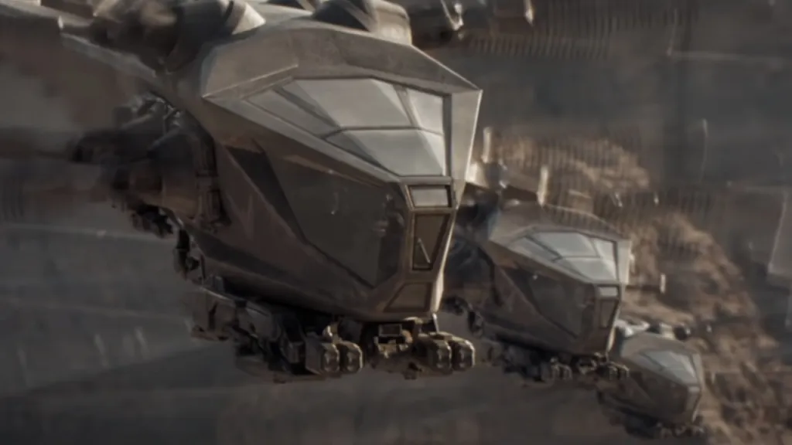

November 2021 | thecityvoice.org/2021/11/04/dune-review-only-the-beginning/
It’s hard to describe the feeling of Dune. Perhaps that’s because I saw it in theaters, double masked and vaccinated and nevertheless uncomfortable with the experience, but still in theaters for the first time in nearly two years. But I think it’s more than that, because Dune is a movie meant to blow you away, and it’s hard to see it for the first time without falling into its starkly alien, undeniably beautiful world.
The characteristic world-building of the Dune universe, even more on display here than in the original 1965 novel by Frank Herbert, begins on the planet Caladan, homeworld of the Atreides. Dune‘s is a world of warring fiefs and Machiavellian backstabbing, and the lords and vassals of House Atreides, despite being the closest things to heroes the film has to offer, are as mired in the deadly, Cold-War-inspired politics of the Galactic Imperium as anyone else. Led by its bearded and brooding Duke, quietly deadly Lady, and troubled young scion, the mighty but noble house of Caladan is forever feuding with its age-old enemy House Harkonnen, and equally forever in danger of losing its delicate position of prominence in the imperium.
Empires come and go, but the desert belongs to the Fremen.
That complicated backstory, perhaps frustratingly to newcomers, is barely hinted at as the film begins. Instead we’re greeted by a rushed montage of House Harkonnen’s withdrawal from the desert planet Arrakis, meant to establish the plight of the world’s oppressed native civilization, the Fremen, immediately followed by a slow, lingering shot of rain painting shadows on the sleeping face of young Paul Atreides.
It’s an unexpected pause for what is, on the whole, an action movie, but shots like this are what make Dune worth seeing. The film is perfectly paced, with an unerring sense of when to jar the viewer from the melancholy or suspenseful length of a drawn out moment to its shockingly swift conclusion. While it doesn’t quite shatter the cinematic mold, it certainly bends it, with early scenes that seem more intended to build out the world of the story and the characters Villeneuve is asking us to care for than to explicitly anchor some climactic fight sequence.
Lady Jessica remains one of Dune’s most compelling characters.
That subtlety is one of the movie’s many strengths, because it gives the story an emotional resonance that makes the otherwise labyrinthine plot twists gripping. I cared, for example, what happened to Lady Jessica in the perilous moments that fill the second half of the movie not because she was a Main Character, but because I genuinely felt for her after watching her tremulously recite the mantra against fear outside the library door on Caladan.
Equally moving is Villeneuve’s depiction of the Fremen, who arguably get the worst end of the stick throughout all of Dune’s ever-shifting political turmoil. When Stillgar, a Fremen leader, meets with the Atreides, his distrust of yet more offworlders promising amicable exploitation is palpable, and the scene serves as a silent reminder that as sympathetic as Paul is, the true underdog of Dune is not a boy who stands to inherit the throne of a stolen world.
Finally, a Dune movie that does thopters right.
The trust that Villeneuve places in the viewer, that we’ll understand the unspoken nuance in that scene and others, also allows this cinematic version of Dune to faithfully adapt more of the original book than I ever thought possible. At nearly seven hundred pages, Dune is a tome of a novel, complete with its own glossary and multiple appendices, many of which find their way into the film not through exposition but in subtle hints and allusions. While I can’t speak to the experience of someone being introduced to Dune for the first time, as a fan of the book I found it thrilling and rewarding to watch.
Yet my favorite part of Dune was not the way it honored the book, although that was pleasing, but the vibrancy of the film’s characters. From Lady Jessica’s warring loyalties, to Duke Leto’s steely heroism in the face of growing Sisyphean despair, to Gurney’s determination and Duncan’s surprisingly touching friendship with Paul, House Atreides slowly but surely won my heart. Most poignant of all were the ways that all of his mentors found their way into Paul’s journey by the end, with a talisman, a salute, or some other subtle homage by his side even when he fought alone.
Like father like son.
As Lady Jessica says to Paul in an early scene, you inherit more than one legacy. True of this movie, too. Seven hundred pages and fifty years of history are a heavy mantle for a movie to bear, but Dune does it with a grace that makes the forbidding world of Arrakis come to life. There’s no doubt that it is still only the beginning, like Avengers: Infinity War, this movie is meant to be seen with its second half, but I can’t object. For two short hours Dune swept me away to a planet of inhuman deserts, terribly human wars, and even, perhaps, a few heroes, and I for one would gladly go there again.